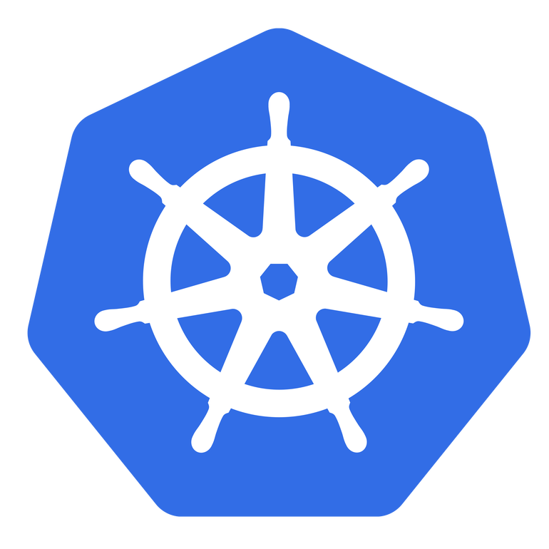
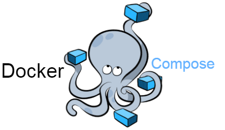
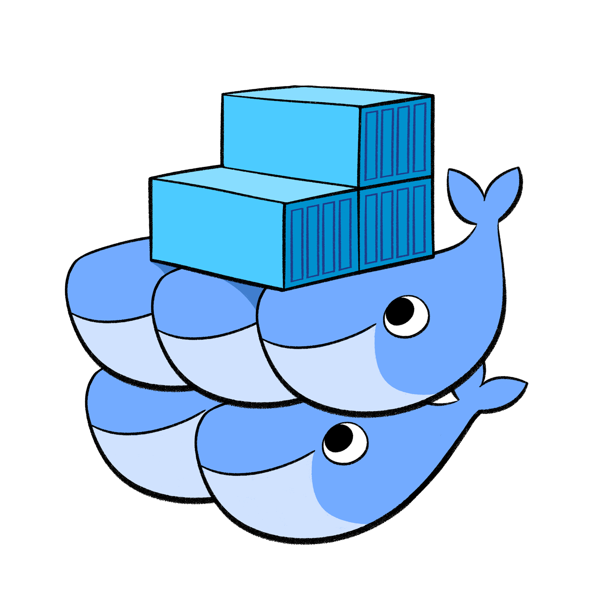
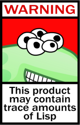
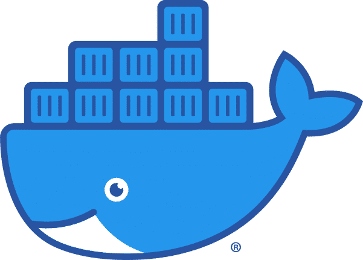
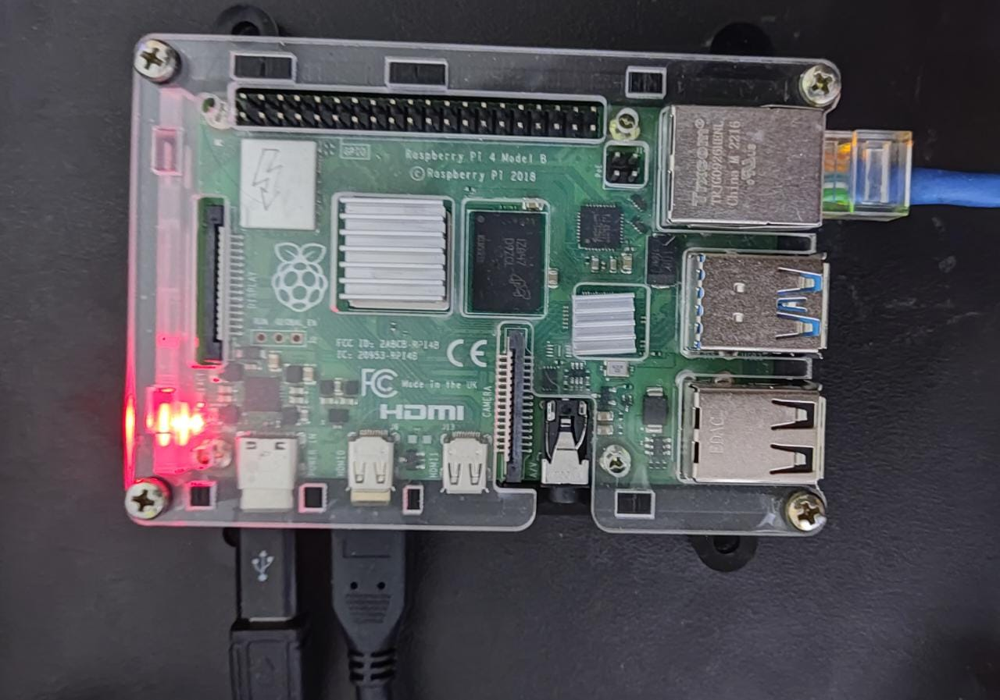
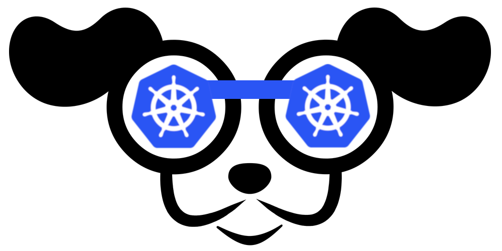
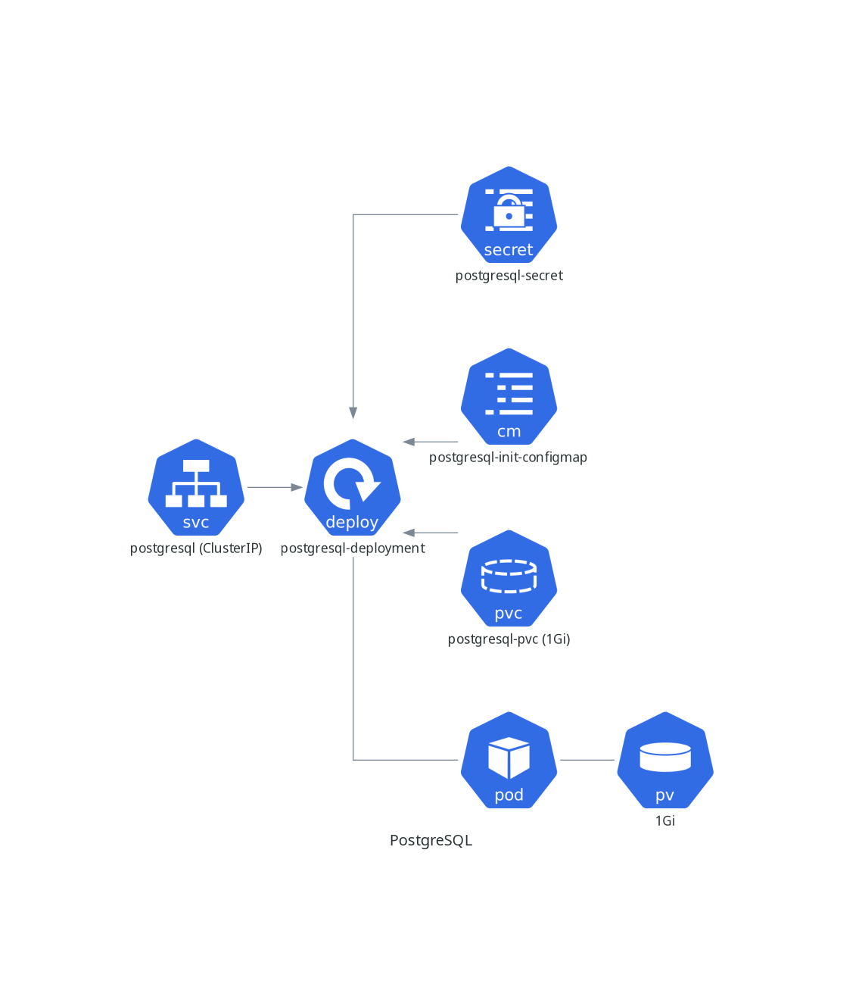
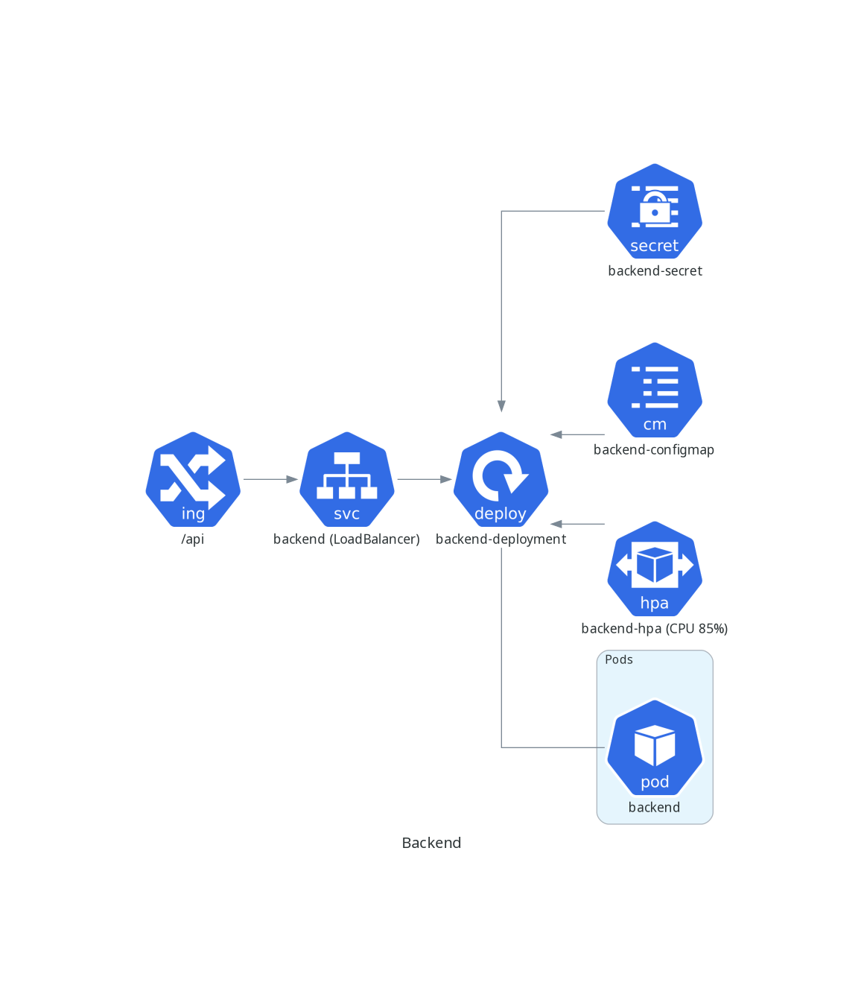
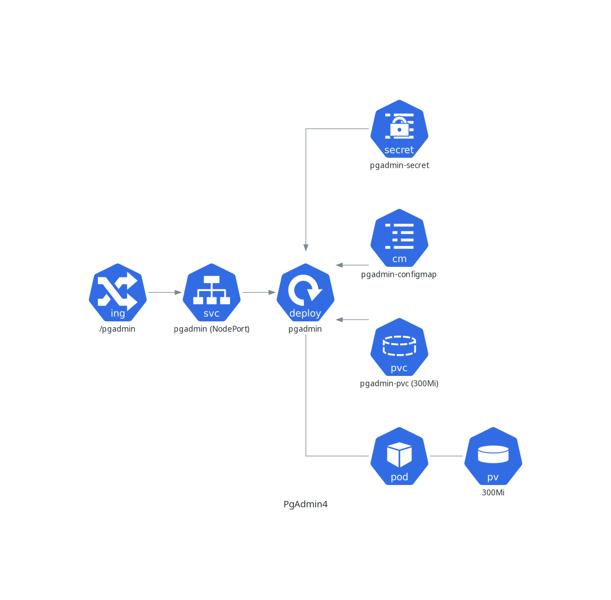

Orquestração de Contêineres com Kubernetes
Lucas S. Vieira
7 de outubro de 2022







Agora, vamos provisionar o PostgreSQL, o backend, e o PgAdmin4.
Mas primeiro, vamos analisar a arquitetura desse provisionamento.



Temos Kubectl instalado e a configuração de acesso em ~/.kube/config, então
basta usarmos o console diretamente.
kubectl apply -f namespace.yml
kubectl apply -f postgresql.yml
kubectl apply -f backend.yml
kubectl apply -f pgadmin.yml
Para criar alguns usuários…
curl -X POST 192.168.2.6:30000/user/seed
Para recuperar os usuários…
curl 192.168.2.6:30000/user
Podemos acessar um recurso no cluster de várias formas. Para um serviço ClusterIP, podemos espelhar a porta de um deployment na nossa máquina, por exemplo.
kubectl port-forward \
-n techimera \
deployment/postgresql-deployment \
5432:5432
Ingresses expõem uma aplicação através de endpoints na porta 80.
No K3s, o gerenciador do cluster é o Traefik Proxy, então temos configuração específica para ele.
kubectl apply -f ingress.yml
Requisições na API:
curl 192.168.2.6/api/user
Acesso ao PgAdmin4: